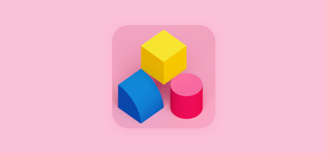
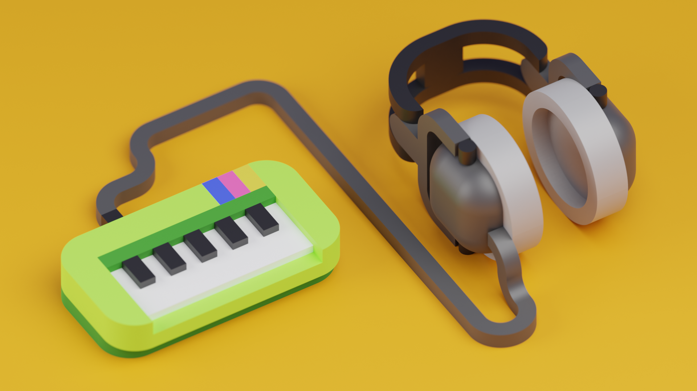

Whisk 3D
02/17/2021 - Jeremy Edelblut

Year: 2020-2021
Role: Everything
Company: Personal
Tools: Figma, Blender, Unity
Overview: Whisk 3D is a creative toy for building small 3D creations. The idea came from my time playing games and wanting to use similar building methods and UX patterns for more complex 3D creations. This project is still very much in progress.
Some early designs to help concept out the visual language that the tool would create.


These headphones were created entirely in whisk then exported using the program to blender for rendering.
Key Learnings:
-
The majority of the learnings were personal and that I have the ability to create whole applications if simple by myself. I spent many hours pouring over C# and Unity. Before this project I would shy away from touching code too much but I’ve gained a new found appreciation and ability when it comes to every aspect of product design.